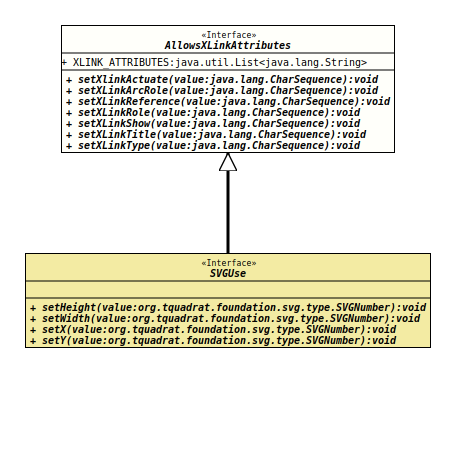

Module org.tquadrat.foundation.svg
Package org.tquadrat.foundation.svg
Interface AllowsXLinkAttributes
- All Known Subinterfaces:
SVGUse
- All Known Implementing Classes:
SVGElementAdapter,SVGGenericElement,SVGUseImpl
@ClassVersion(sourceVersion="$Id: AllowsXLinkAttributes.java 1074 2023-10-02 12:05:06Z tquadrat $")
@API(status=STABLE,
since="0.0.5")
public sealed interface AllowsXLinkAttributes
permits SVGUse
{kind=link}
SVG elements that allow the XLink attributes
"xlink:actuate",
"xlink:arcrole",
"xlink:href",
"xlink:role",
"xlink:show",
"xlink:title",
and
"xlink:type"
will implement this interface.
- Author:
- Thomas Thrien (thomas.thrien@tquadrat.org)
- Version:
- $Id: AllowsXLinkAttributes.java 1074 2023-10-02 12:05:06Z tquadrat $
- Since:
- 0.0.5
- UML Diagram
-

UML Diagram for "org.tquadrat.foundation.svg.AllowsXLinkAttributes"
{kind=link}
-
Field Summary
Fields -
Method Summary
Modifier and TypeMethodDescriptionvoidsetXlinkActuate(CharSequence value) Sets the XLinkactuateattribute.voidsetXLinkArcRole(CharSequence value) Sets the XLinkarcroleattribute.voidsetXLinkReference(CharSequence value) Sets the XLinkreferenceattribute.voidsetXLinkRole(CharSequence value) Sets the XLinkroleattribute.voidsetXLinkShow(CharSequence value) Sets the XLinkshowattribute.voidsetXLinkTitle(CharSequence value) Sets the XLinktitleattribute.voidsetXLinkType(CharSequence value) Sets the XLinktypeattribute.
-
Field Details
-
XLINK_ATTRIBUTES
The core attributes.
-
-
Method Details
-
setXlinkActuate
Sets the XLinkactuateattribute.- Parameters:
value- The attribute type.
-
setXLinkArcRole
Sets the XLinkarcroleattribute.- Parameters:
value- The attribute type.
-
setXLinkReference
Sets the XLinkreferenceattribute.- Parameters:
value- The attribute type.
-
setXLinkRole
Sets the XLinkroleattribute.- Parameters:
value- The attribute type.
-
setXLinkShow
Sets the XLinkshowattribute.- Parameters:
value- The attribute type.
-
setXLinkTitle
Sets the XLinktitleattribute.- Parameters:
value- The attribute type.
-
setXLinkType
Sets the XLinktypeattribute.- Parameters:
value- The attribute type.
-
{kind=link}
{kind=link}
{kind=link}
{kind=link}
{kind=link}
{kind=link}
{kind=link}
{kind=link}